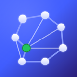

Nicht oberflächlich: Dinge anfassen, verstehen, optimieren.
Das soziale Netz für Maker
Kein Werbe-Tracking. Dein Konto gehört dir – niemand kann es dir wegnehmen. Zeig, woran du baust, folge anderen Makern – ohne E-Mail, ohne Passwort, ohne Werbe-Profil.
Ehrlicher Hinweis: Dies ist eine geschlossene Beta
(Vorabversion). Funktionen können sich ändern oder ausfallen. Nodavo ist
pseudonym, nicht anonym – und alles, was du öffentlich zeigst
(Profil, öffentliche Projekte, Kommentare), ist für alle sichtbar.
Wie es funktioniert
- Dein Konto ist ein Schlüssel. Nachdem du bestätigt hast, 17 oder älter zu sein, erzeugt die App ein Schlüsselpaar, das nur auf deinem Gerät liegt – damit kannst du dich sofort umsehen. Ein Konto richtest du erst bei deiner ersten Handlung ein (Folgen, Liken, Kommentieren, Melden, ein eigenes Projekt zeigen). Es gibt keine Anmeldung, keine E-Mail-Adresse, kein Passwort. Mit 24 Wiederherstellungswörtern, die du sichern solltest (vor deinem ersten eigenen Projekt ist das Pflicht), holst du dein Konto auf ein neues Gerät – nur du kennst sie, wir nicht.
- Privater Follower-Feed, Ende-zu-Ende-verschlüsselt. Beiträge für deine Follower kann nur lesen, wer dir folgt. Wir als Betreiber können sie nicht lesen. In deinem Feed erscheinen die Beiträge der Maker, denen du folgst, streng chronologisch; einzelne Projekte kannst du selbst ausblenden.
- Entdecken ist öffentlich. Profile, Projekte zum Entdecken, Kommentare und Likes sind bewusst öffentlich – so finden dich neue Leute. Die Reihenfolge ist offen einsehbar (Neuestes, Likes, Follower, Aktivität, dazu bezahlte Plätze) und wird auf deinem Gerät berechnet – dein Follower-Feed bleibt davon komplett getrennt.
- Unser Server sorgt dafür, dass Beiträge ankommen. Beiträge laufen über unseren Server (Relais-Server): Er nimmt sie entgegen, bewahrt eine Kopie auf und liefert sie an deine Follower aus, auch wenn du gerade offline bist. Private Beiträge liegen dort nur verschlüsselt. Der Server sieht Verbindungs-Daten (IP-Adresse, Zeitpunkte) – schon beim bloßen Lesen – und die öffentlichen Inhalte.
- Mitteilungen auf Wunsch. Schaltest du Mitteilungen ein, weckt eine inhaltslose Mitteilung deine App. Dafür erfährt unser Benachrichtigungs-Dienst, für welche Maker dein Gerät geweckt werden möchte (Einzelheiten: Datenschutzerklärung, Abschnitt 6a).
- Boost ist gekennzeichnete Werbung. Maker können die Sichtbarkeit eines Projekts in Entdecken kaufen – in vier Stufen von „Hochschieben" bis „Bühne" (Einmalkauf, kein Abo). Jeder bezahlte Platz trägt den Hinweis „Beworben". Je Liste gibt es höchstens drei bezahlte Plätze oben; Hervorhebungen sind begrenzt. Plätze und Hervorhebungen werden im Wechsel unter allen Beworbenen vergeben – einen festen Platz gibt es nicht. Der Feed der Maker, denen du folgst, bleibt davon unberührt.
Was Nodavo ehrlicherweise nicht ist
- Nicht „100 % anonym". Dein öffentlicher Schlüssel, deine IP-Adresse gegenüber unserem Server und wem du folgst, sind technisch sichtbar.
- Kein Dienst, der dein Konto retten kann. Ohne deine 24 Wörter ist ein verlorenes Konto weg – wir haben keinen Zweitschlüssel.
- Kein „alles überall zurückholen". „Konto endgültig löschen" entfernt dein Konto sofort von unserem Server und bei den Apps deiner Follower; Kopien, die jemand vorher gespeichert oder fotografiert hat, lassen sich nicht zurückholen (siehe Konto & Daten löschen).
- Kein fertiges Produkt – es ist eine Beta.
Rechtliches & Hilfe
Datenschutzerklärung
Welche Daten wo verarbeitet werden – und die ehrlichen Grenzen.
Nutzungsbedingungen
Beta-Charakter, Verhaltensregeln, Haftung, Mindestalter.
Support & Kontakt
Probleme melden, Missbrauch melden, kurze FAQ.
Konto & Daten löschen
Konto endgültig löschen oder nur vom Gerät entfernen – inkl. Grenzen.
Mindestalter: 17 Jahre. Diese App richtet sich nicht an Kinder.